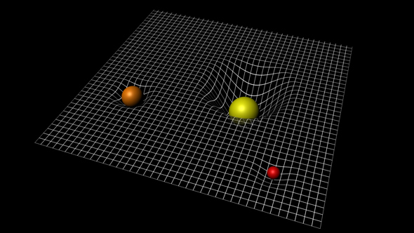

Ondas gravitacionales
Los científicos de ligó 1° y virgo 2° realizaron una investigación que paso por de minuciosos análisis, por lo cual se anuncio la primera detección directa de ondas gravitacionales como también la primera observación de la fusión de un sistema binario de agujeros negros,
Para lo cual las desconocidas ondas gravitacionales han llamado demasiado la atención de los medios y de la mayoría de los más prestigiosos científicos como también la de los premios internacionales de la astro física.

Lo cual no es de extrañar, ya que también las primeras detecciones directas de ondas gravitacionales se han denominado sin duda uno de los logros científicos más importantes del siglo, que no solo porque han servido para validar uno de los pilares de la física moderna, sino también por la teoría de la relatividad general y además también porque se abre una nueva ventana por la cual se observa el universo de diferente manera.
Es un potencial importante del descubrimiento de sistemas astronómicos ahora inimaginables.
Regresar
1° El interferómetro de Virgo es un interferómetro grande diseñado para detectar ondas gravitatorias predichas por la teoría general de la relatividad. Virgo es un interferómetro de Michelson que está aislado de perturbaciones externas: sus espejos e instrumentación están suspendidos y su rayo láser funciona en vacío. Los dos brazos del instrumento miden tres kilómetros de longitud y están situados cerca de Pisa, Italia.
2° LIGO es un Observatorio de detección de ondas gravitacionales. La sigla proviene de Laser Interferometer Gravitational-Wave Observatory (Observatorio de ondas gravitacionales por interferometría láser).1 La misión para la que se diseñó es confirmar la existencia de las ondas gravitacionales predichas por la teoría de la relatividad general de Einstein, y medir sus propiedades.
Anónimo. (2017). Aumento de temperatura en el golfo de mexici. 2017, de 30/03/2017 Sitio web: http://movil.ecoticias.com/eco-america/134172/Se-esperan-intensas-tormentas-en-el-sur-del-pais-por-inusual-temperatura-del-agua-en-el-Golfo-de-Mexico
Victor Leonardo Reyes Arelllano